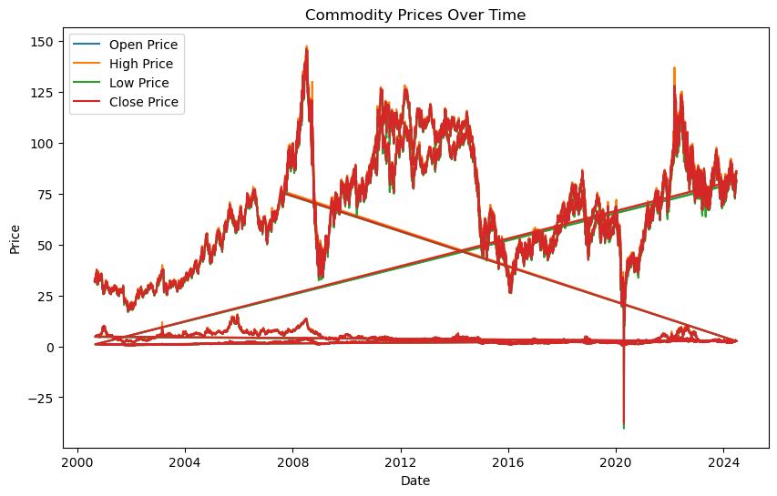
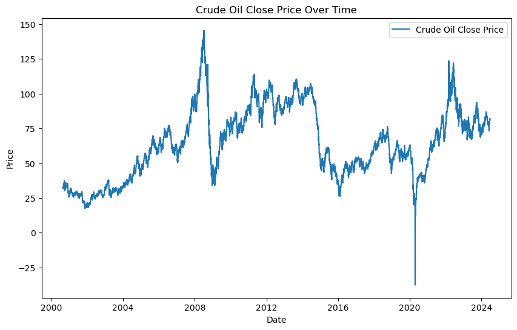
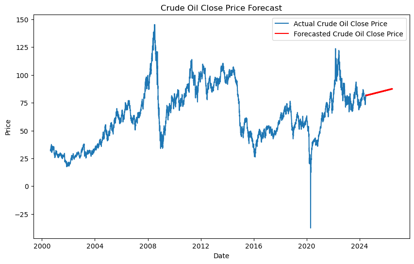
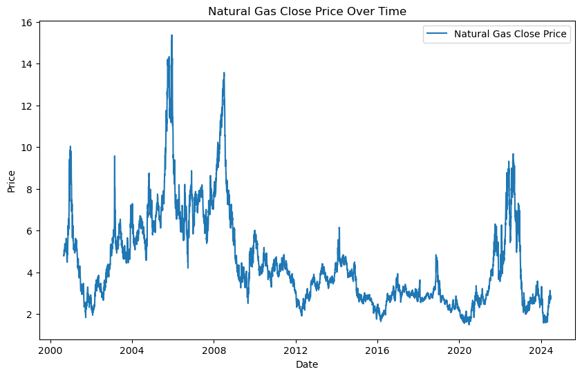
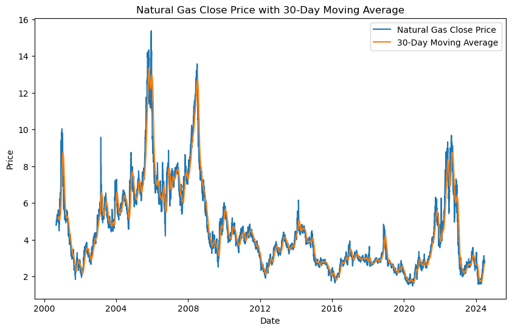
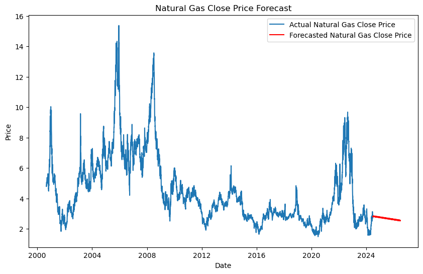

Series de tiempo#
Se procede a importar los datos de los commodities, obtenidos por DataSet de Kaggle y se analiza el precio de las materias primas a lo largo del tiempo.
# Input data files are available in the read-only "../input/" directory
# For example, running this (by clicking run or pressing Shift+Enter) will list all files under the input directory
import os
for dirname, _, filenames in os.walk('C:/Users/Johal/Documents/Uninorte/SeriesdeTiempo/MachineLearning/DataTarea1/individual_data'):
for filename in filenames:
print(os.path.join(dirname, filename))
# You can write up to 20GB to the current directory (/kaggle/working/) that gets preserved as output when you create a version using "Save & Run All"
# You can also write temporary files to /kaggle/temp/, but they won't be saved outside of the current session
C:/Users/Johal/Documents/Uninorte/SeriesdeTiempo/MachineLearning/DataTarea1/individual_data\all_fuels_data.csv
C:/Users/Johal/Documents/Uninorte/SeriesdeTiempo/MachineLearning/DataTarea1/individual_data\Brent_Crude_Oil_data.csv
C:/Users/Johal/Documents/Uninorte/SeriesdeTiempo/MachineLearning/DataTarea1/individual_data\Crude_Oil_data.csv
C:/Users/Johal/Documents/Uninorte/SeriesdeTiempo/MachineLearning/DataTarea1/individual_data\Heating_Oil_data.csv
C:/Users/Johal/Documents/Uninorte/SeriesdeTiempo/MachineLearning/DataTarea1/individual_data\Natural_Gas_data.csv
C:/Users/Johal/Documents/Uninorte/SeriesdeTiempo/MachineLearning/DataTarea1/individual_data\RBOB_Gasoline_data.csv
import pandas as pd
import numpy as np
import matplotlib.pyplot as plt
from statsmodels.tsa.seasonal import seasonal_decompose
from statsmodels.tsa.stattools import adfuller
from statsmodels.graphics.tsaplots import plot_acf
from statsmodels.tsa.statespace.sarimax import SARIMAX
from sklearn.metrics import mean_absolute_error, mean_squared_error
from math import sqrt
# Step 1: Data Preparation
# Assuming your commodity dataset is stored in a CSV file named 'commodity_data.csv'
data = pd.read_csv('C:/Users/Johal/Documents/Uninorte/SeriesdeTiempo/MachineLearning/DataTarea1/individual_data/all_fuels_data.csv')
data['Date'] = pd.to_datetime(data['date'])
data.set_index('Date', inplace=True)
# Step 2: Exploratory Data Analysis (EDA)
# Descriptive Statistics
print(data.describe())
open high low close volume
count 28075.000000 28075.000000 28075.000000 28075.000000 2.807500e+04
mean 27.288994 27.680580 26.873389 27.287224 1.059926e+05
std 36.085625 36.540236 35.599243 36.089001 1.484400e+05
min -14.000000 0.507000 -40.320000 -37.630001 0.000000e+00
25% 2.031000 2.060550 1.998200 2.031250 2.641100e+04
50% 3.374000 3.450000 3.301000 3.375900 4.903300e+04
75% 54.895000 55.745001 53.910000 54.900000 1.147245e+05
max 146.080002 147.429993 144.270004 146.080002 2.288230e+06
data.head(-1)
| ticker | commodity | date | open | high | low | close | volume | |
|---|---|---|---|---|---|---|---|---|
| Date | ||||||||
| 2000-08-23 | CL=F | Crude Oil | 2000-08-23 | 31.950001 | 32.799999 | 31.950001 | 32.049999 | 79385 |
| 2000-08-24 | CL=F | Crude Oil | 2000-08-24 | 31.900000 | 32.240002 | 31.400000 | 31.629999 | 72978 |
| 2000-08-25 | CL=F | Crude Oil | 2000-08-25 | 31.700001 | 32.099998 | 31.320000 | 32.049999 | 44601 |
| 2000-08-28 | CL=F | Crude Oil | 2000-08-28 | 32.040001 | 32.919998 | 31.860001 | 32.869999 | 46770 |
| 2000-08-29 | CL=F | Crude Oil | 2000-08-29 | 32.820000 | 33.029999 | 32.560001 | 32.720001 | 49131 |
| ... | ... | ... | ... | ... | ... | ... | ... | ... |
| 2024-06-14 | BZ=F | Brent Crude Oil | 2024-06-14 | 82.139999 | 83.389999 | 81.919998 | 82.620003 | 39346 |
| 2024-06-17 | BZ=F | Brent Crude Oil | 2024-06-17 | 82.620003 | 84.550003 | 82.110001 | 84.250000 | 32978 |
| 2024-06-18 | BZ=F | Brent Crude Oil | 2024-06-18 | 84.400002 | 85.480003 | 83.660004 | 85.330002 | 45690 |
| 2024-06-20 | BZ=F | Brent Crude Oil | 2024-06-20 | 85.379997 | 85.970001 | 84.889999 | 85.709999 | 52543 |
| 2024-06-21 | BZ=F | Brent Crude Oil | 2024-06-21 | 85.680000 | 86.230003 | 84.839996 | 85.239998 | 25055 |
28074 rows × 8 columns
#Time Series Visualization
plt.figure(figsize=(10,6))
plt.plot(data.index, data['open'], label='Open Price')
plt.plot(data.index, data['high'], label='High Price')
plt.plot(data.index, data['low'], label='Low Price')
plt.plot(data.index, data['close'], label='Close Price')
plt.title('Commodity Prices Over Time')
plt.xlabel('Date')
plt.ylabel('Price')
plt.legend()
plt.show()

De la imagen anterior, podemos observar como las líneas de los precios se superponen entre sí, por lo que se deberá analizar el precio de cierre de cada commodity por separado. Para efectos del ejercicio, analizaremos el petróleo crudo y el gas natural.
crude_oil_data = data[data['commodity'] == 'Crude Oil']
brent_crude_oil_data = data[data['commodity'] == 'Brent Crude Oil']
heating_oil_data=data[data['commodity'] == 'Heating Oil']
natural_gas_data=data[data['commodity'] == 'Natural Gas']
rbob_gasoline_data=data[data['commodity'] == 'RBOB Gasoline']
plt.figure(figsize=(10, 6))
plt.plot(crude_oil_data.index, crude_oil_data['close'], label='Crude Oil Close Price')
plt.title('Crude Oil Close Price Over Time')
plt.xlabel('Date')
plt.ylabel('Price')
plt.legend()
plt.show()

def sarima_forecast(data):
# Stationarity Testing
result = adfuller(data)
print('ADF Statistic:', result[0])
print('p-value:', result[1])
# Model Fitting
sarima_model = SARIMAX(data, order=(1, 1, 1), seasonal_order=(1, 1, 1, 30))
sarima_result = sarima_model.fit()
forecast_horizon=730
# Forecasting
forecast = sarima_result.predict(start=len(data),
end=len(data) + forecast_horizon - 1, # Adjusted end index
typ='levels')
# Extend the index to include forecasted dates
forecast.index = pd.date_range(start=data.index[-1] + pd.Timedelta(days=1),
periods=forecast_horizon, # Adjusted periods argument
freq='D')
return forecast, sarima_result
# Fit SARIMA model, forecast, and evaluate for Crude Oil
crude_oil_forecast, crude_oil_model = sarima_forecast(crude_oil_data['close'])
ADF Statistic: -2.7548529467181466
p-value: 0.0650176871568625
C:\Users\Johal\miniconda3\envs\ml_venv\lib\site-packages\statsmodels\tsa\base\tsa_model.py:473: ValueWarning: A date index has been provided, but it has no associated frequency information and so will be ignored when e.g. forecasting.
self._init_dates(dates, freq)
C:\Users\Johal\miniconda3\envs\ml_venv\lib\site-packages\statsmodels\tsa\base\tsa_model.py:473: ValueWarning: A date index has been provided, but it has no associated frequency information and so will be ignored when e.g. forecasting.
self._init_dates(dates, freq)
---------------------------------------------------------------------------
KeyboardInterrupt Traceback (most recent call last)
Cell In[6], line 23
20 return forecast, sarima_result
22 # Fit SARIMA model, forecast, and evaluate for Crude Oil
---> 23 crude_oil_forecast, crude_oil_model = sarima_forecast(crude_oil_data['close'])
Cell In[6], line 9, in sarima_forecast(data)
7 # Model Fitting
8 sarima_model = SARIMAX(data, order=(1, 1, 1), seasonal_order=(1, 1, 1, 30))
----> 9 sarima_result = sarima_model.fit()
10 forecast_horizon=730
11 # Forecasting
File ~\miniconda3\envs\ml_venv\lib\site-packages\statsmodels\tsa\statespace\mlemodel.py:703, in MLEModel.fit(self, start_params, transformed, includes_fixed, cov_type, cov_kwds, method, maxiter, full_output, disp, callback, return_params, optim_score, optim_complex_step, optim_hessian, flags, low_memory, **kwargs)
701 flags['hessian_method'] = optim_hessian
702 fargs = (flags,)
--> 703 mlefit = super().fit(start_params, method=method,
704 fargs=fargs,
705 maxiter=maxiter,
706 full_output=full_output,
707 disp=disp, callback=callback,
708 skip_hessian=True, **kwargs)
710 # Just return the fitted parameters if requested
711 if return_params:
File ~\miniconda3\envs\ml_venv\lib\site-packages\statsmodels\base\model.py:566, in LikelihoodModel.fit(self, start_params, method, maxiter, full_output, disp, fargs, callback, retall, skip_hessian, **kwargs)
563 del kwargs["use_t"]
565 optimizer = Optimizer()
--> 566 xopt, retvals, optim_settings = optimizer._fit(f, score, start_params,
567 fargs, kwargs,
568 hessian=hess,
569 method=method,
570 disp=disp,
571 maxiter=maxiter,
572 callback=callback,
573 retall=retall,
574 full_output=full_output)
575 # Restore cov_type, cov_kwds and use_t
576 optim_settings.update(kwds)
File ~\miniconda3\envs\ml_venv\lib\site-packages\statsmodels\base\optimizer.py:243, in Optimizer._fit(self, objective, gradient, start_params, fargs, kwargs, hessian, method, maxiter, full_output, disp, callback, retall)
240 fit_funcs.update(extra_fit_funcs)
242 func = fit_funcs[method]
--> 243 xopt, retvals = func(objective, gradient, start_params, fargs, kwargs,
244 disp=disp, maxiter=maxiter, callback=callback,
245 retall=retall, full_output=full_output,
246 hess=hessian)
248 optim_settings = {'optimizer': method, 'start_params': start_params,
249 'maxiter': maxiter, 'full_output': full_output,
250 'disp': disp, 'fargs': fargs, 'callback': callback,
251 'retall': retall, "extra_fit_funcs": extra_fit_funcs}
252 optim_settings.update(kwargs)
File ~\miniconda3\envs\ml_venv\lib\site-packages\statsmodels\base\optimizer.py:660, in _fit_lbfgs(f, score, start_params, fargs, kwargs, disp, maxiter, callback, retall, full_output, hess)
657 elif approx_grad:
658 func = f
--> 660 retvals = optimize.fmin_l_bfgs_b(func, start_params, maxiter=maxiter,
661 callback=callback, args=fargs,
662 bounds=bounds, disp=disp,
663 **extra_kwargs)
665 if full_output:
666 xopt, fopt, d = retvals
File ~\miniconda3\envs\ml_venv\lib\site-packages\scipy\optimize\_lbfgsb_py.py:237, in fmin_l_bfgs_b(func, x0, fprime, args, approx_grad, bounds, m, factr, pgtol, epsilon, iprint, maxfun, maxiter, disp, callback, maxls)
225 callback = _wrap_callback(callback)
226 opts = {'disp': disp,
227 'iprint': iprint,
228 'maxcor': m,
(...)
234 'callback': callback,
235 'maxls': maxls}
--> 237 res = _minimize_lbfgsb(fun, x0, args=args, jac=jac, bounds=bounds,
238 **opts)
239 d = {'grad': res['jac'],
240 'task': res['message'],
241 'funcalls': res['nfev'],
242 'nit': res['nit'],
243 'warnflag': res['status']}
244 f = res['fun']
File ~\miniconda3\envs\ml_venv\lib\site-packages\scipy\optimize\_lbfgsb_py.py:407, in _minimize_lbfgsb(fun, x0, args, jac, bounds, disp, maxcor, ftol, gtol, eps, maxfun, maxiter, iprint, callback, maxls, finite_diff_rel_step, **unknown_options)
401 task_str = task.tobytes()
402 if task_str.startswith(b'FG'):
403 # The minimization routine wants f and g at the current x.
404 # Note that interruptions due to maxfun are postponed
405 # until the completion of the current minimization iteration.
406 # Overwrite f and g:
--> 407 f, g = func_and_grad(x)
408 elif task_str.startswith(b'NEW_X'):
409 # new iteration
410 n_iterations += 1
File ~\miniconda3\envs\ml_venv\lib\site-packages\scipy\optimize\_differentiable_functions.py:297, in ScalarFunction.fun_and_grad(self, x)
295 self._update_x_impl(x)
296 self._update_fun()
--> 297 self._update_grad()
298 return self.f, self.g
File ~\miniconda3\envs\ml_venv\lib\site-packages\scipy\optimize\_differentiable_functions.py:267, in ScalarFunction._update_grad(self)
265 def _update_grad(self):
266 if not self.g_updated:
--> 267 self._update_grad_impl()
268 self.g_updated = True
File ~\miniconda3\envs\ml_venv\lib\site-packages\scipy\optimize\_differentiable_functions.py:181, in ScalarFunction.__init__.<locals>.update_grad()
179 self._update_fun()
180 self.ngev += 1
--> 181 self.g = approx_derivative(fun_wrapped, self.x, f0=self.f,
182 **finite_diff_options)
File ~\miniconda3\envs\ml_venv\lib\site-packages\scipy\optimize\_numdiff.py:519, in approx_derivative(fun, x0, method, rel_step, abs_step, f0, bounds, sparsity, as_linear_operator, args, kwargs)
516 use_one_sided = False
518 if sparsity is None:
--> 519 return _dense_difference(fun_wrapped, x0, f0, h,
520 use_one_sided, method)
521 else:
522 if not issparse(sparsity) and len(sparsity) == 2:
File ~\miniconda3\envs\ml_venv\lib\site-packages\scipy\optimize\_numdiff.py:590, in _dense_difference(fun, x0, f0, h, use_one_sided, method)
588 x = x0 + h_vecs[i]
589 dx = x[i] - x0[i] # Recompute dx as exactly representable number.
--> 590 df = fun(x) - f0
591 elif method == '3-point' and use_one_sided[i]:
592 x1 = x0 + h_vecs[i]
File ~\miniconda3\envs\ml_venv\lib\site-packages\scipy\optimize\_numdiff.py:470, in approx_derivative.<locals>.fun_wrapped(x)
467 if xp.isdtype(x.dtype, "real floating"):
468 x = xp.astype(x, x0.dtype)
--> 470 f = np.atleast_1d(fun(x, *args, **kwargs))
471 if f.ndim > 1:
472 raise RuntimeError("`fun` return value has "
473 "more than 1 dimension.")
File ~\miniconda3\envs\ml_venv\lib\site-packages\scipy\optimize\_differentiable_functions.py:145, in ScalarFunction.__init__.<locals>.fun_wrapped(x)
141 self.nfev += 1
142 # Send a copy because the user may overwrite it.
143 # Overwriting results in undefined behaviour because
144 # fun(self.x) will change self.x, with the two no longer linked.
--> 145 fx = fun(np.copy(x), *args)
146 # Make sure the function returns a true scalar
147 if not np.isscalar(fx):
File ~\miniconda3\envs\ml_venv\lib\site-packages\statsmodels\base\model.py:534, in LikelihoodModel.fit.<locals>.f(params, *args)
533 def f(params, *args):
--> 534 return -self.loglike(params, *args) / nobs
File ~\miniconda3\envs\ml_venv\lib\site-packages\statsmodels\tsa\statespace\mlemodel.py:938, in MLEModel.loglike(self, params, *args, **kwargs)
935 if complex_step:
936 kwargs['inversion_method'] = INVERT_UNIVARIATE | SOLVE_LU
--> 938 loglike = self.ssm.loglike(complex_step=complex_step, **kwargs)
940 # Koopman, Shephard, and Doornik recommend maximizing the average
941 # likelihood to avoid scale issues, but the averaging is done
942 # automatically in the base model `fit` method
943 return loglike
File ~\miniconda3\envs\ml_venv\lib\site-packages\statsmodels\tsa\statespace\kalman_filter.py:1001, in KalmanFilter.loglike(self, **kwargs)
985 r"""
986 Calculate the loglikelihood associated with the statespace model.
987
(...)
997 The joint loglikelihood.
998 """
999 kwargs.setdefault('conserve_memory',
1000 MEMORY_CONSERVE ^ MEMORY_NO_LIKELIHOOD)
-> 1001 kfilter = self._filter(**kwargs)
1002 loglikelihood_burn = kwargs.get('loglikelihood_burn',
1003 self.loglikelihood_burn)
1004 if not (kwargs['conserve_memory'] & MEMORY_NO_LIKELIHOOD):
KeyboardInterrupt:
Se aplica el modelo SARIMA para predecir el precio del petróleo crudo.
plt.figure(figsize=(10, 6))
plt.plot(crude_oil_data.index, crude_oil_data['close'], label='Actual Crude Oil Close Price')
plt.plot(crude_oil_forecast.index, crude_oil_forecast, label='Forecasted Crude Oil Close Price', color='red')
plt.title('Crude Oil Close Price Forecast')
plt.xlabel('Date')
plt.ylabel('Price')
plt.legend()
plt.show()

plt.figure(figsize=(10, 6))
plt.plot(natural_gas_data.index, natural_gas_data['close'], label='Natural Gas Close Price')
plt.title('Natural Gas Close Price Over Time')
plt.xlabel('Date')
plt.ylabel('Price')
plt.legend()
plt.show()
rolling_mean_natural_gas = natural_gas_data['close'].rolling(window=30).mean()
plt.figure(figsize=(10, 6))
plt.plot(natural_gas_data.index, natural_gas_data['close'], label='Natural Gas Close Price')
plt.plot(rolling_mean_natural_gas.index, rolling_mean_natural_gas, label='30-Day Moving Average')
plt.title('Natural Gas Close Price with 30-Day Moving Average')
plt.xlabel('Date')
plt.ylabel('Price')
plt.legend()
plt.show()
natural_gas_forecast, natural_gas_model = sarima_forecast(natural_gas_data['close'])
plt.figure(figsize=(10, 6))
plt.plot(natural_gas_data.index, natural_gas_data['close'], label='Actual Natural Gas Close Price')
plt.plot(natural_gas_forecast.index, natural_gas_forecast, label='Forecasted Natural Gas Close Price', color='red')
plt.title('Natural Gas Close Price Forecast')
plt.xlabel('Date')
plt.ylabel('Price')
plt.legend()
plt.show()



ADF Statistic: -3.0372618855301416
p-value: 0.03155811387757923
c:\Users\Johal\miniconda3\envs\ml_venv\lib\site-packages\statsmodels\tsa\base\tsa_model.py:473: ValueWarning: A date index has been provided, but it has no associated frequency information and so will be ignored when e.g. forecasting.
self._init_dates(dates, freq)
c:\Users\Johal\miniconda3\envs\ml_venv\lib\site-packages\statsmodels\tsa\base\tsa_model.py:473: ValueWarning: A date index has been provided, but it has no associated frequency information and so will be ignored when e.g. forecasting.
self._init_dates(dates, freq)
c:\Users\Johal\miniconda3\envs\ml_venv\lib\site-packages\statsmodels\tsa\base\tsa_model.py:836: ValueWarning: No supported index is available. Prediction results will be given with an integer index beginning at `start`.
return get_prediction_index(
c:\Users\Johal\miniconda3\envs\ml_venv\lib\site-packages\statsmodels\tsa\base\tsa_model.py:836: FutureWarning: No supported index is available. In the next version, calling this method in a model without a supported index will result in an exception.
return get_prediction_index(
c:\Users\Johal\miniconda3\envs\ml_venv\lib\site-packages\statsmodels\tsa\statespace\representation.py:374: FutureWarning: Unknown keyword arguments: dict_keys(['typ']).Passing unknown keyword arguments will raise a TypeError beginning in version 0.15.
warnings.warn(msg, FutureWarning)